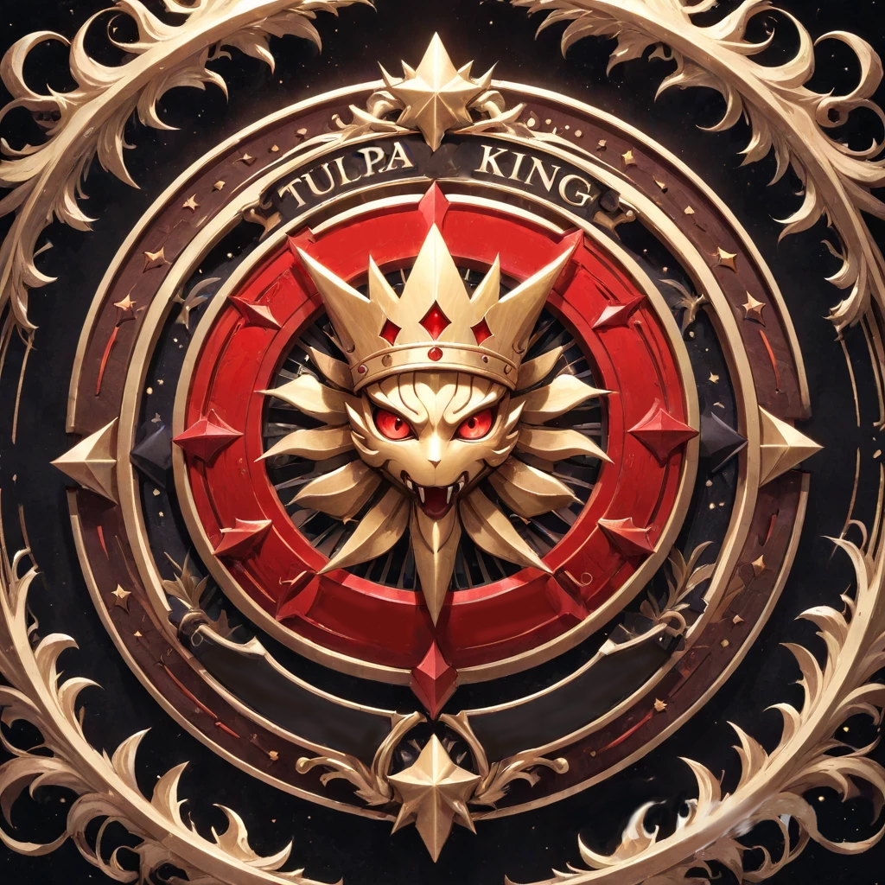

Welcome to TuplaKing®
Herzlich Willkommen im TulpaKing! Du bist bereit, die Welt zu erforschen und Tulpas zu fangen?
Bewegung
Im TulpaKing zu gehen ist einfach:
Mit den W, A, S, D, Tasten bewegst du dich nach Oben, Unten, Links und Rechts.
Aktion
Mit der Linken Maustaste führst du eine Aktion in TulpaKing aus.
Um im TulpaKing ein Haus zu Betreten, drücke auf die Tür, wenn dein Charackter sich in der Nähe der Tür befindet (Achte auf das Pfeil an der Tür).

Menü Liste
Um im TulpaKing die Menü Liste zu öffnen, drücke unten Links im Bildschirm auf das Menü Feld.

Tulpa-Dex
Im Tulpa-Dex wird dir gezeigt welche Tulpas im Spiel vorhanden sind und eine erklärung zu jedem Tulpa.
Tulpa's
In der Menü Liste unter Tulpa's kannst du deine Tulpas verwalten, umtauschen und ggf. löschen. Dort wird der Level deines Tulpa angezeigt, sowie die Anzahl der HP.

Info
Hier findest du dein Charackter Namen, dein Anzahl an Gold, wie viele Tulpas du gefangen hast und wie oft du Cheats verwendet hast.
Karte
In der Karte siehst du die ganze Map und wo du dich Aktuell befindest (Achte auf das Blaues Zeichen in der Karte).
Item's
In TulpaKing gibt es im Item sogenannte "Tränke, Bälle und Bonbons." Es gibt bei Tränke Zwei Varianten; Heiltrank gibt deinem Tulpa, den du auswählen musst HP Points wieder. Manatrank füllt die Mana Punkte deines Tuplas wieder auf. Bälle sind dafür da, um Tulpas zu fangen, die du in der Wildnis triffst. Bonbons sind dafür da, um die Level deines Tulpa zu steigern.
Um die Items zu verwenden, öffne die Menü Liste und gehe auf den Reiter "Items". Dort kannst du die Items auswählen und verwenden.
Cheats
Es gibt inTulpaKing erst mal 2 Cheats. Um die Cheats zu verwenden, öffne die Menü Liste und gehe auf den Reiter "Cheats". Dort kannst du die Cheats eingeben. Im Spiel wird mitgezählt, wie oft du Cheats verwendet hast. So kannst du nachvollziehen, ob du fair gespielt oder dir durch Hilfen Vorteile verschafft hast. Der Zähler dient nur zur Information und hat keinen Einfluss auf das Spielergebnis.
Cheats
- MOREGOLD (Gibt dir 1000 Gold)
- CHANGENAME (Erlaubt dir dein Spiel Name umzuändern)
Kampf System ⚔️
In TulpaKing kämpfst du mit deinen Tulpas gegen wilde Gegner. Jeder Zug zählt, ob du angreifst, ein Item benutzt oder deinen Tulpa wechselst, du musst klug entscheiden, um zu siegen!
Shop